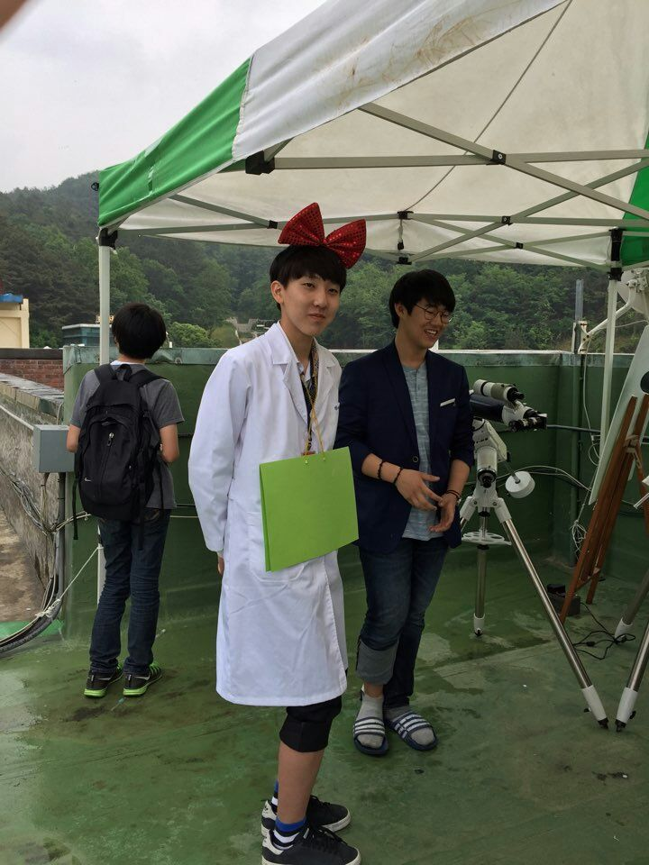
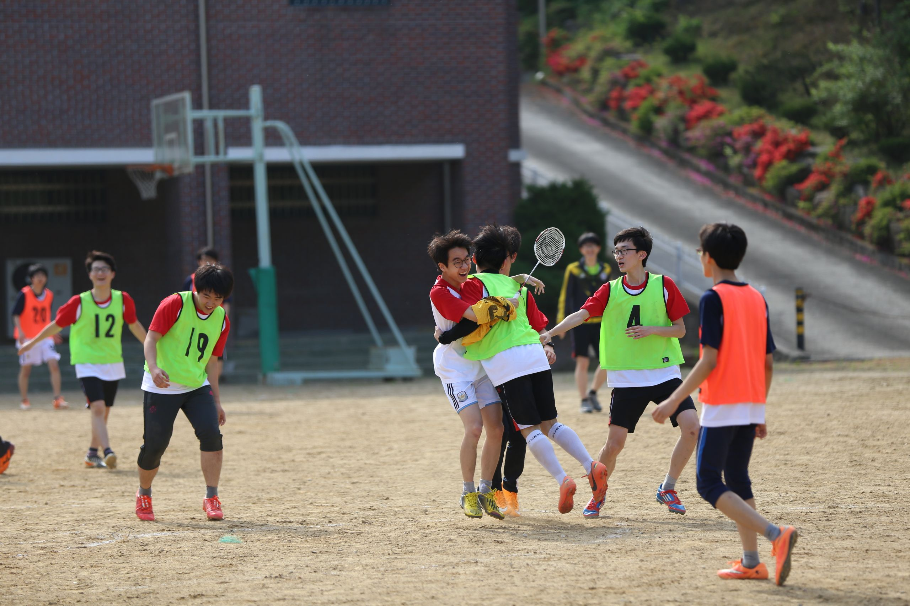
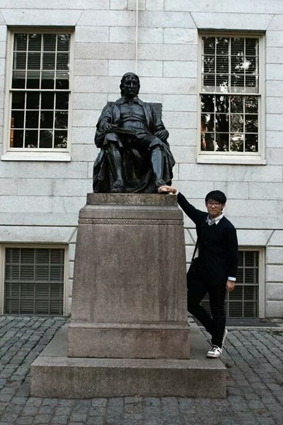

Middle & High School Times
 When I entered middle school, I concentrated more on studying. In elementary school, I studied what I wanted, while in middle school, I started to study what I needed. I lacked a lot more than I thought. Also, I had a dream of science high school. I tried hard to achieve that dream. Naturally, it became impossible to spend time assembling books and blocks. As a result of hard work, I entered a science high school with excellent grades. In science high school, I became interested in earth science and fell in love with it.
My Hobby That Time
 After I went to middle school, I became very interested in soccer, not books and block assembly Every day during the break between classes, I ran out to the playground with the ball and enjoyed soccer with my friends. Now that I think about it, I think I had fun exercising for the first time thanks to soccer. Also, I could make a lot of friends and develop social skills by playing soccer. For your information, my favorite team is Chelsea. Blue is the color
A Little Boast
 There were many opportunities in science high school. I got a chance to visit America and Canada for the first time. There were also many competitions prepared. Interested in earch science, I participated in many competitions. I was able to get good results in the competition. I also participated in the camp with good results at the Korean National Earth Science Olympiad.